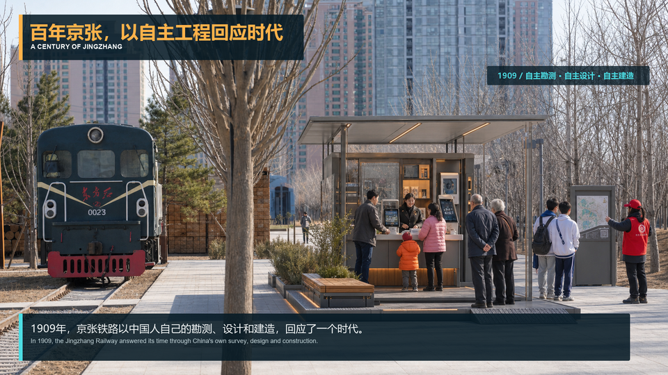

京张工程记忆栈
自主工程史、遗产导览与可核验贡献展示。
以平台基座、固定 AI 核心和可替换场景插件，把百年京张遗址公共廊道转化为连接科研、产业、商业、公共服务与城市生活的开放创新网络。
可插接可生长可回退人工可接管

三大定位：百年京张文化带 · 都市 AI 生活体验带 · AI 融合创新带
五大功能：全栈自主创新 · 世界级创新生态 · AI+ 场景赋能 · 智能活力城市 · 可信 AI 治理
三区两翼：众智园研发与验证 · AI 原点社区协作与成长 · 大钟寺发布与市场 · 中关村科技服务 · 小月河场景反馈
总览地图 · 三层范围 · 用地分区 · 交通慢行 · 建筑 · 更新项目 · AI 场景 · 核心指标 · 任务覆盖 · 自检状态 · 来源 · 假设
上述内容分别由方案文本、空间图纸、场景与指标图、来源清单和假设清单共同支撑。


自主工程史、遗产导览与可核验贡献展示。
开放课题、开发者工具与经授权的协作成果。
产品体验、商户共创与真实市场反馈。
开放节点明确空间、运营和技术责任人。
AI 插件具备版本、告知、人工接管、停用和恢复记录。
基本公共服务保留人工或非 AI 通道。
存在未关闭高风险事项时，不得扩展。
用户确认总体设计工作范围，非官方红线。
概念绿廊机器图层比例，仅用于包内复核。
概念公共主脊机器图层比例，仅用于包内复核。
首轮容量预估，须由真实需求与运营基线校准。


所有空间建议均为竞赛概念和可供专业团队深化的参考方案；工作边界、指标预估和生成效果图不构成法定规划、工程结论或实施承诺。